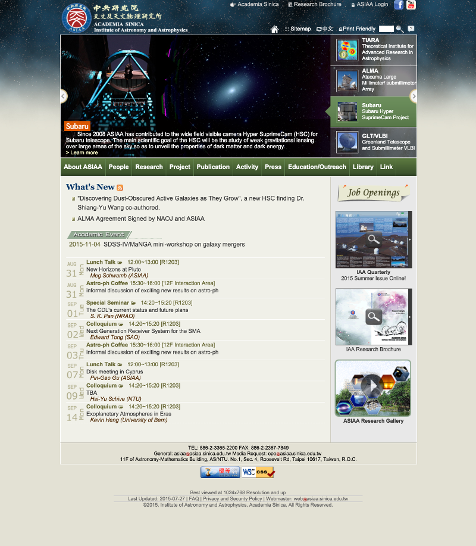
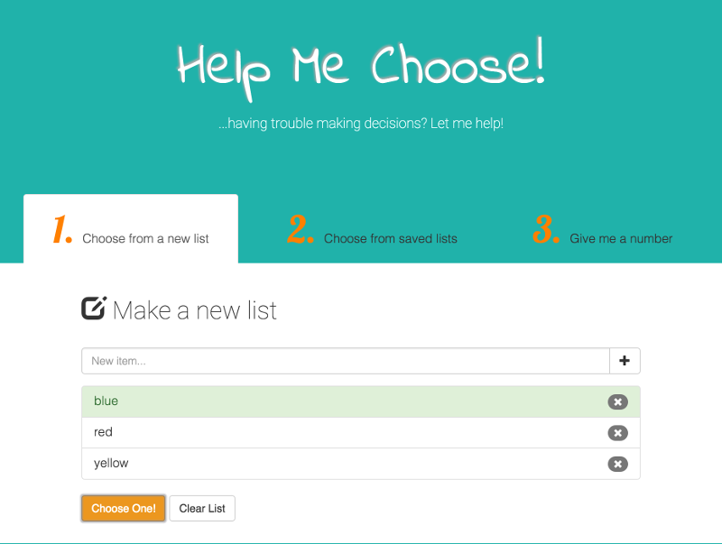
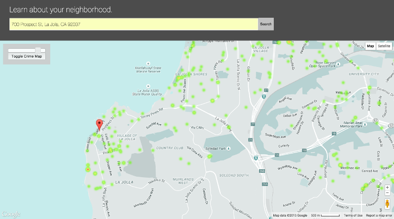

1 The snapshot of ASIAA website. The UI design was rebuilt by successive webmasters, however the fundamental layout, the UI logic, the code behind the functionality were the same as I built the site in 2003. Backend built by PHP, MySQL.

2 The snapshot of "Help Me Choose" web application. Three functionalities are included: Users can draw a random choice from a variety of preset lists, draw from a user defined new list, or get a random number between a user defined range. Built with AngularJS, jQuery and Bootstrap.

3 This snapshot demonstrates the "Know Your Neighboorhood" web aplication which shows the trend of crime incidents over the past year around an user specified address. Map data is from Google Maps API; crime data is from Crime Data API by Mashape. Application is built by Knockout.js and jQeury.